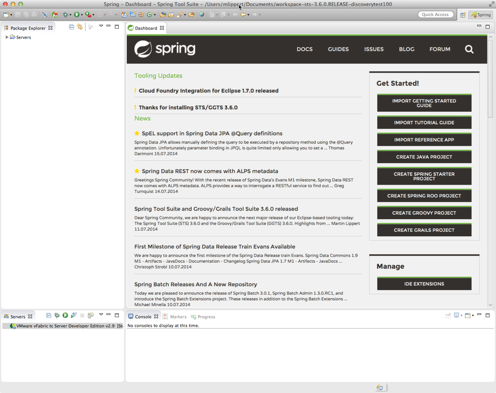
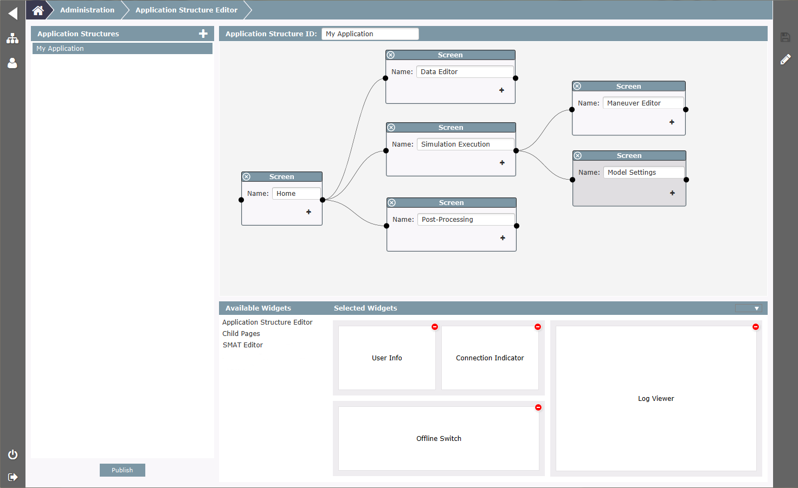

References built with e(fx)clipse
Below you find a list of applications who are built with or at least partly on e(fx)clipse components. If you also have developed an application feel free to drop us a mail efxclipse@bestsolution.at and we get your application listed
Built on e(fx)clipse components applications, tools, ...
The following applications make use of e(fx)clipse components e.g. to integrate JavaFX into OSGi or are built completely on top of the e(fx)clipse runtime platform exploiting e4.
Spring Tool Suite & Groovy/Grails Tool Suite by Pivotal

The Spring Tool Suite as well as the Groovy/Grails Tool Suite (the two Eclipse-based tool suite distributions from Pivotal) uses the OSGi runtime integration of e(fx)clipse to integrate JavaFX components into the UI of the IDE (using the SWT bridge from JavaFX). The main purpose of this is to use the WebKit-based cross-platform web view component of JavaFX to implement and use highly sophisticated HTML5-based UIs inside the desktop IDE.
As a first step the dashboard component inside the tool suites (which was build using traditional SWT widgets and form-based JFace layouts ) got replaced with an HTML-based version that is rendered using the JavaFX web view. It includes dynamic content as well as the option to trigger actions inside the IDE when a user presses buttons inside the web view.
The cross-platform availability of JavaFX as part of the JDK (including support for high-res retina displays on OSX) turns this into an interesting solution as alternative to using the native browser widgets that come as part of SWT.
EXPORTTM by Welland

Bla Bla Bla
Tesis-Template by Tesis

Bla Bla Bla